신장, 체중과 같이 가능한 값이 실수인 형태를 양적 변량 데이터라 한다. 이와 같은 한 양적 변량 데이터 시각화에는 점그래프, 히스토그램, 줄기와 잎 그림 등이 이용된다. 다음 예를 가지고 이 그래프들이 무엇인지 살펴보자.
📊 🌿3.1 한 양적 변량 데이터의 그래프 |
한 양적 변량 데이터인 경우에 다음과 같은 그래프를 그려 분석한다. - 점그래프 - 히스토그램 - 줄기와 잎 그림 두 양적 변량 데이터인 경우에 다음과 같은 그래프를 그려 분석한다. - 산점도 |
신장, 체중과 같이 가능한 값이 실수인 형태를 양적 변량 데이터라 한다. 이와 같은 한 양적 변량 데이터 시각화에는 점그래프, 히스토그램, 줄기와 잎 그림 등이 이용된다. 다음 예를 가지고 이 그래프들이 무엇인지 살펴보자.
🎲 예 3.1요사이 미세먼지가 자주 발생해 우리 생활에 불편을 주고 있다. 과연 한 달 중 며칠이나 미세먼지가 심하게 발생하는지 살펴보기 위해 서울의 미세먼지농도를 조사한 자료가 다음과 같다. 『eStat』을 이용하여 점그래프, 히스토그램, 줄기와 잎 그림 등을 그려 보자.
표 3.1 2021년 2월 서울의 일평균 초미세먼지농도 (㎍/\(m^3\))
(환경부 대기환경정보 http: www.airkorea.or.kr 참조)
|
||
풀이 |
『eStat』시스템에서 시트의 V1에 28개의 데이터를 모두 입력하고 변량편집으로 V1의 변량명을 '미세먼지'로 지정한다. 점그래프 아이콘 을 클릭한 후 마우스로 첫째 변량 '미세먼지'를 선택하면 [그림 3.1]과 같은 미세먼지농도에 대한 점그래프가 그려진다. 분석변량 선택 박스에서 '미세먼지'를 선택해도 된다. 그래프 밑의 선택사항에서 '평균/표준편차'를 체크하면 [그림 3.2]와 같이 데이터의 평균과 (평균) ± (표준편차) 구간을 같이 관찰 할 수 있다, 미세먼지농도가 평균의 왼쪽에 데이터가 많고, 평균 오른쪽에 몇 개의 데이터가 분포되어 있음을 관찰 할 수 있다. 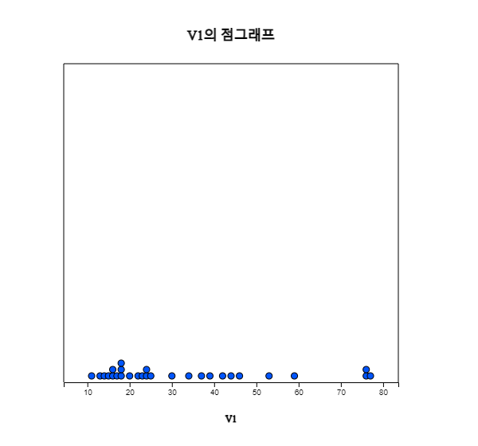 [그림 3.1] 미세먼지의 점그래프
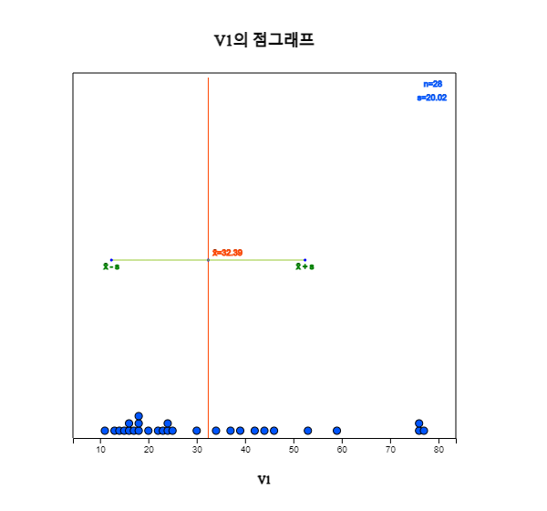 [그림 3.2] 평균±표준편차 점그래프
히스토그램 아이콘 을 클릭하면 [그림 3.3]과 같은 그래프가 나타난다. 그래프 밑의 선택사항에서 평균, 도수표시, 도수분포다각형을 체크하면 [그림 3.4]와 같이 히스토그램 위에 도수분포다각형이 표시된다. 히스토그램을 살펴보면 역시 평균의 왼쪽에 데이터가 많고, 평균 오른쪽에 몇 개의 데이터가 분포되어 있음을 관찰 할 수 있다. 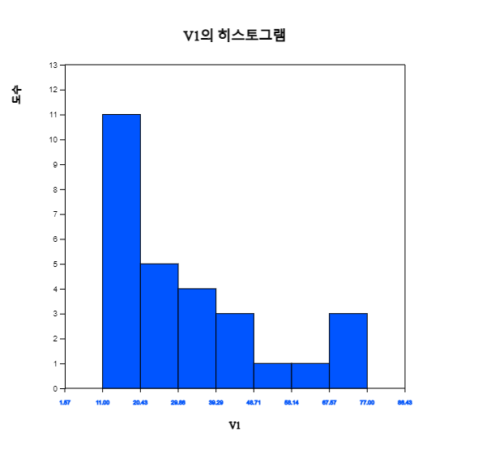 [그림 3.3] 미세먼지의 히스토그램
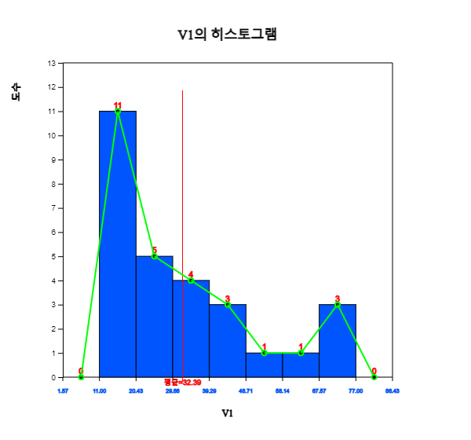 [그림 3.4] 미세먼지 도수분포다각형
'도수분포표' 버튼을 클릭하면 [그림 3.5]와 같이 결과저장창에 현재 그려진 히스토그램의 각 구간별 도수분포표가 출력된다. 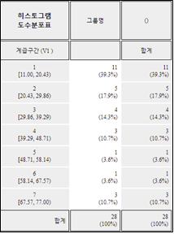 [그림 3.5] 히스토그램의 도수분포표
히스토그램에서 구간의 수와 구간의 너비는 『eStat』시스템이 자동적으로 계산하는데 사용자가 그래프 밑의 선택사항([그림 3.6]에서 구간시작과 구간너비를 지정해서 다시 그릴 수도 있다. 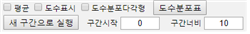 [그림 3.6] 히스토그램의 선택사항
줄기와 잎 그림 아이콘 을 클릭하면 [그림 3.7]과 같은 그래프가 나타난다. 이 그래프는 히스토그램의 변형 형태로서 여기서는 구간 [10, 20), [20, 30), ... [70, 80)에 속하는 데이터를 찾아낸 후 각 구간의 한 자릿수를 줄기로 하고 이 구간에 속하는 데이터의 소숫점 이하 자릿수를 잎 형태로 하여 표시한 것이다. 각 구간에 속하는 데이터의 끝자리 수는 작은 값에서 큰 값 순으로 정렬한다. 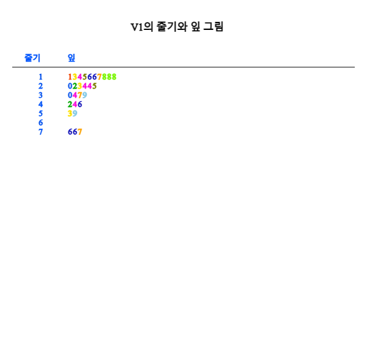 [그림 3.7] 미세먼지의 줄기와 잎 그림
|
|
🎲 예 3.2한 중학교 선생님의 성별과 나이를 조사한 데이터가 ⇨ 01Korean ⇨ 032연속_선생님성별나이.csv에 저장되어 있다.『eStat』을 이용하여 점그래프, 히스토그램, 줄기와 잎 그림 등을 그려 보자. |
|
풀이 |
『eStat』시스템에서 [Ex] ⇨ 01Korean ⇨ 032연속_선생님성별나이.csv를 불러오면 [그림 3.8]과 같다. 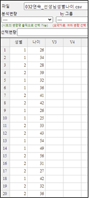 [그림 3.8] 선생님 성별과 나이 데이터
점그래프 아이콘을 클릭한 후 마우스로 변량 '나이'와 '성별'을 선택하면 [그림 3.9]와 같은 남녀별 나이의 점그래프가 그려진다. '분석변량' 선택박스에서 '나이'를, 'by 그룹' 선택박스에서 '성별'을 선택하여도 된다. 그래프 밑의 선택사항에서 '평균/표준편차'를 체크하면 [그림 3.10]와 같이 평균선과 (평균)(표준편차) 구간이 점그래프위에 표시된다. 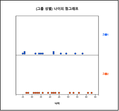 [그림 3.9] 성별 나이의 점그래프
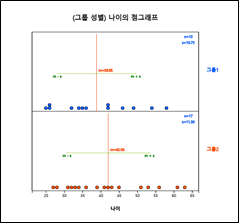 [그림 3.10] 평균±표준편차 점그래프
성별 선생님 나이를 살펴보면 여자 선생님의 나이 평균이 더 높음을 알 수 있다. 이와 같은 두 그룹에 대한 통계적인 비교 분석은 8장에서 자세히 살펴본다. 히스토그램 아이콘을 클릭하면 [그림 3.11]과 같은 그래프가 나타난다. 그래프 밑의 선택사항을 이용하면 히스토그램 위에 평균, 도수표시, 도수분포다각형을 그릴 수 있으며([그림 3.12]), 각 구간에 대한 도수분포표([그림 3.13])를 결과저장창에 나타낼 수 있다. 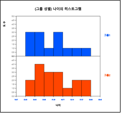 [그림 3.11] 성별 나이의 히스토그램
[그림 3.12] 성별 도수분포다각형
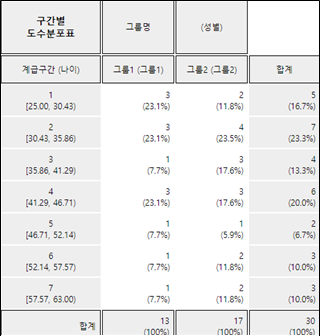 [그림 3.13] 선생님 성별 나이의 히스토그램에 대한 구간별 도수분포표
히스토그램에서 구간의 수와 구간의 너비는 자동적으로 계산하는데 사용자가 구간시작과 구간너비를 지정해서 다시 그릴 수도 있다. 줄기와 잎 그림 아이콘을 클릭하면 [그림 3.14]와 같은 그래프가 나타난다. 이 그래프는 히스토그램의 변형 형태로 여기서는 각 그룹별로 구간 [20, 30), [30, 40), ... [60, 69)에 속하는 데이터를 조사하여 각 구간의 십자리수를 줄기로 하고 그 구간에 속하는 데이터의 끝자리 수를 잎 형태로 하여 표시한 것이다. 각 구간에 속하는 데이터의 끝자리 수는 작은 값에서 큰 값 순으로 정렬한다. 그룹이 두 개일 경우에는 양쪽형 아이콘을 클릭하면 [그림 3.15]와 같은 양쪽형 줄기와 잎 그림을 그릴 수도 있다. 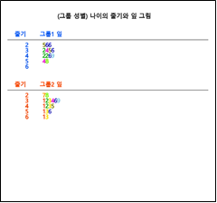 [그림 3.14] 성별 나이의 줄기와 잎 그림
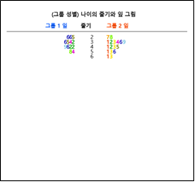 [그림 3.15] [그림 3.15] 성별 나이의 양쪽형 줄기와 잎 그림,
|
🎲 예 3.3『eStatU』를 이용하여 표 3.1의 미세먼지 농도 데이터에 대한 줄기와 잎 그림을 그려보자. |
|
풀이 |
『eStatU』 메뉴에서 '줄기와 잎 그림'을 선택하면 [그림 3.16]과 같은 창이 나타난다. '자료 입력'에 미세먼지농도 자료를 입력하고 '주 제목'에 원하는 그림 제목을 입력한다. [실행] 버튼을 클릭하면 아래와 같은 줄기와 잎 그림이 나타난다. 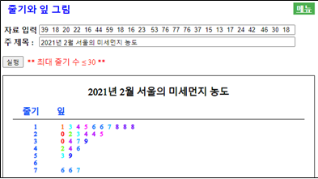 [그림 3.16] 미세먼지 농도의 줄기와 잎 그림
|
|
『eStatU』 메뉴에서 '히스토그램 – 도수분포표'를 선택하면 [그림 3.17]과 같은 자료 입력창이 나타난다. '자료 입력'에 일별 최저기온 자료를 입력하면 즉시 [그림 3.16]과 같이 입력된 자료수 28과 최솟값이 –10.6도이고 최댓값이 6.4도임을 보여준다. 이 정보를 이용하여 구간시작과 구간너비를 정할 수 있다. 여기서는 구간시작을 –15, 구간너비를 5도로 정하였다. 원하는 제목을 입력하고 [실행] 버튼을 클릭하면 [그림 3.17]과 같은 히스토그램이 나타난다. 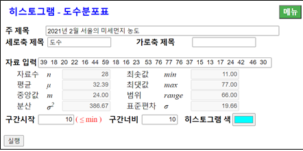 [그림 3.17] 히스토그램의 자료 입력창
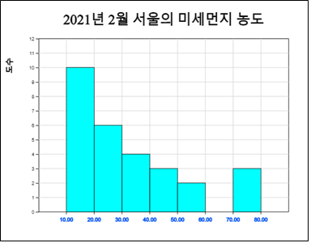 [그림 3.18] 서울의 미세먼지농도에 대한 히스토그램
|
|
일반적으로 한 관찰대상에 대해 데이터를 수집할 경우 하나 이상의 변량에 대한 정보를 수집한다. 예를 들어, 한 초등학교 학생에 대해서는 성별과 함께 신장 및 체중을 같이 조사할 수 있다. 즉, 한 개의 범주형 변량과 두 양적 변량을 측정하는 경우이다.
이와 같이 두 개의 양적 변량을 측정한 데이터는 산점도(scatter plot)를 이용하여 두 변량의 관련성 등을 분석할 수 있다. 두 양적 변량에 대한 상관 및 회귀분석은 12장에서 자세히 살펴본다. 산점도는 한 변량의 값을 x축, 다른 변량의 값을 y축으로 하여 2차원 평면위에 각각의 데이터를 표시한 것이다. 만일 성별과 같은 범주형 변량을 같이 측정하여 그룹으로 하였다면 각 그룹의 색을 구분하여 산점도를 그릴 수 있다.
🎲 예 3.4한 초등학교 학급 10명의 성별, 신장, 체중을 조사한 데이터가 [Ex] ⇨ 01Korean ⇨ 035연속_성별신장체중.csv에 저장되어 있다.『eStat』을 이용하여 신장과 체중의 산점도를 그리고 성별 신장과 체중의 산점도를 그려보자. |
|
풀이 |
『eStat』시스템에서는 [Ex] ⇨ 01Korean ⇨ 035연속_성별신장체중.csv를 불러온다. 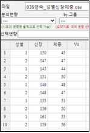 [그림 3.19] 신장 체중 데이터
산점도 아이콘 을 클릭한 후 마우스로 '체중'과 '신장' 을 클릭하면 [그림 3.20]과 같은 체중을 y축(첫 번째 선택된 변량), 신장을 x축(두 번째 선택된 변량)으로 한 산점도가 그려진다. 'Y변량' 선택박스에서 '체중'을, 'by X변량' 선택박스에서 '신장'을 선택하여도 된다. 그래프 밑의 선택사항에서 '회귀선'을 체크하면 체중과 신장과의 관계를 나타내는 회귀선이 [그림 3.21]과 같이 표시된다. 산점도를 살펴보면 신장이 클수록 체중도 상대적으로 많이 나가는 것을 관찰할 수 있다. 회귀선에 대한 자세한 내용은 12장을 참조하기 바란다. 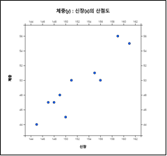 [그림 3.20] 신장 및 체중의 산점도
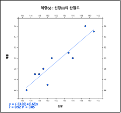 [그림 3.21] 신장 및 체중의 회귀선
성별로 그룹이 표시된 산점도를 그리려면 선택사항의 '그룹' 박스에서 '성별'을 선택하면 [그림 3.22]와 같이 성별이 다른 색으로 표시된 그림이 나타난다. 선택사항에서 '회귀선'을 체크하면 [그림 3.23]과 같이 각 그룹별 회귀선이 이 표시된다. 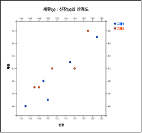 [그림 3.22] 성별 신장 및 체중의 산점도
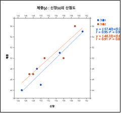 [그림 3.23] 성별 신장 및 체중의 산점도 및 회귀선
선택사항에서 '크기변량'을 선택하면 이 변량의 크기에 비례한 원들로 표시된 [그림 3.24]와 같은 산점도가 나타난다. 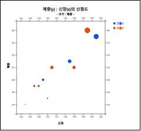 [그림 3.24] 체중의 크기에 비례하게 점을 그린 성별 신장 및 체중의 산점도
|
*** 답을 선택한 후 [제출] 버튼을 누르세요